96 个独立类型 · 每套 24 个 · 每套 8 个文化核心按具体用途和结构形态设计；点击“内部”查看去顶结构，或进入 Studio 自由旋转与切层。
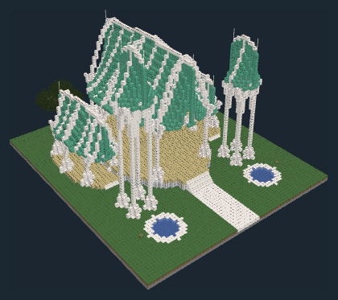
叶脉穹廊与双层露台
议事 / 正式接见
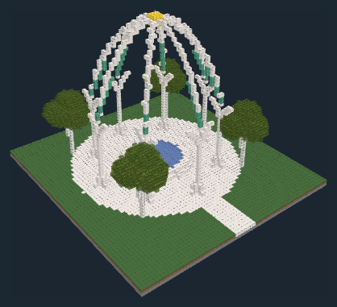
八瓣拱肋与露天圣池
礼仪 / 纪念 / 水景观赏
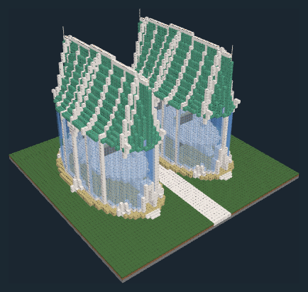
双叶书塔与跨庭阅览廊
文献保管 / 阅读
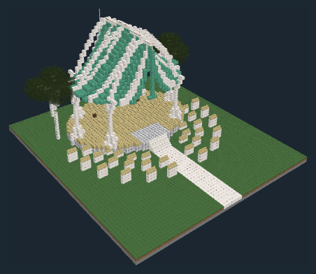
扇形观席与悬叶舞台
表演 / 教学 / 集会
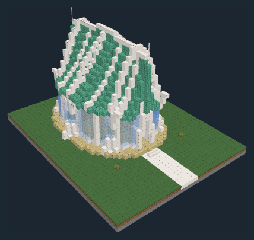
玻璃花窗与起居露台
家庭居住
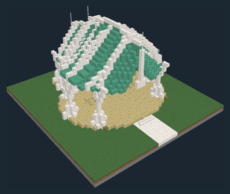
分叉货亭与后部储间
商品零售 / 货物暂存
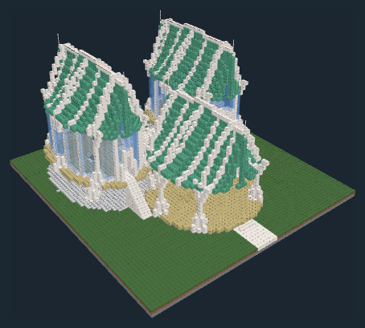
高低客亭与分叉平台
旅客住宿 / 餐饮
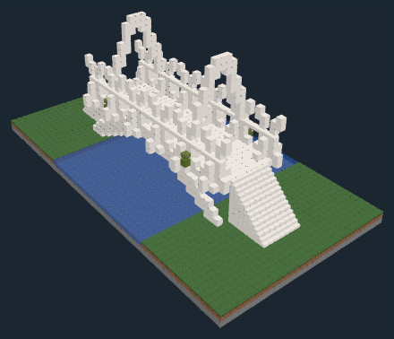
双肋桥腹与花栏
步行过桥
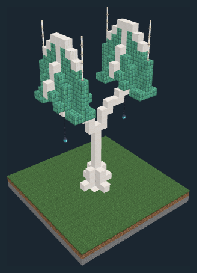
分叉枝托与垂瓣光盏
道路照明
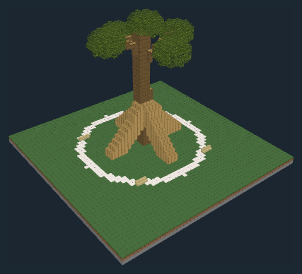
弯枝华盖与环根坐席
树木观赏 / 休憩
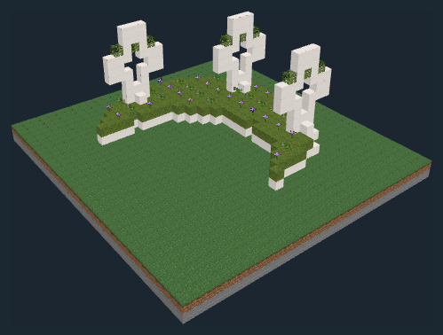
镂拱围边与高低花簇
花草观赏
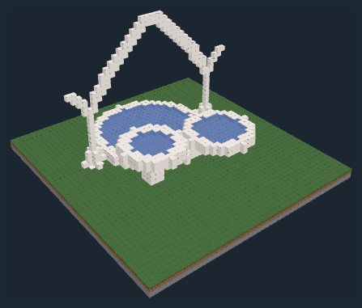
三瓣水盆与曲肋泉亭
水景观赏 / 休憩
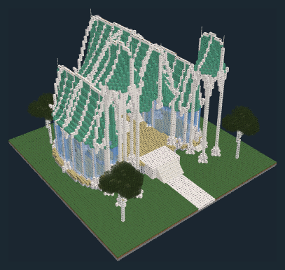
三级露台与白枝王座廊
正式接见 / 礼仪 / 居住
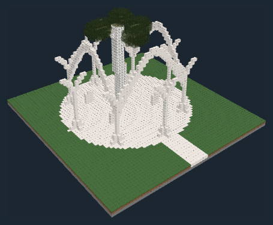
环树双拱与月石碑
纪念 / 礼仪
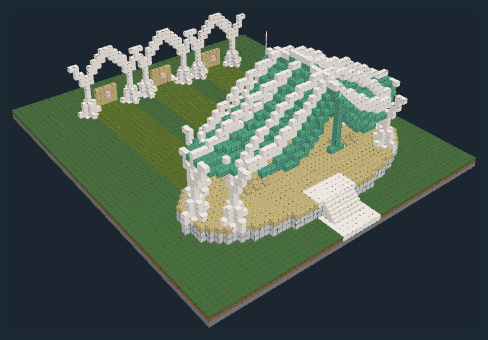
三道靶廊与高台观训席
军事训练 / 驻守
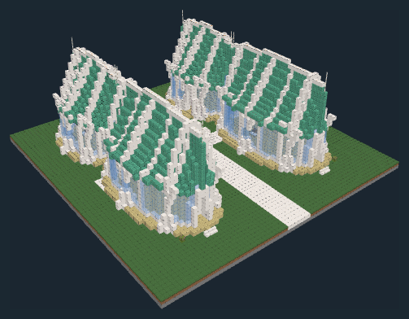
四叶寝亭与中央泉径
医疗 / 休养 / 园艺养护
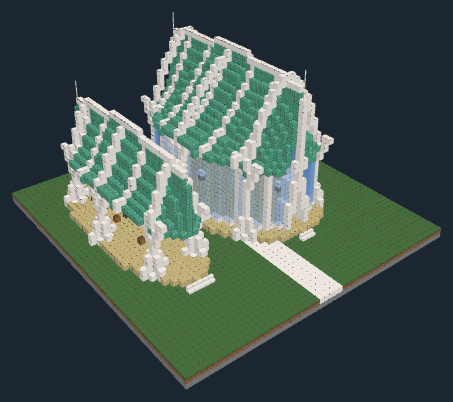
长翼织架与染线凉廊
纺织 / 手工制作
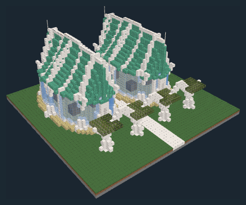
花架前庭与双叶发酵室
酿酒 / 食品制作
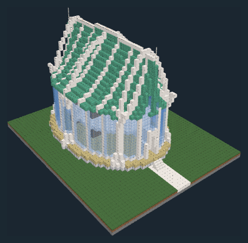
叶脊高架与通风储层
货物仓储 / 食品保管
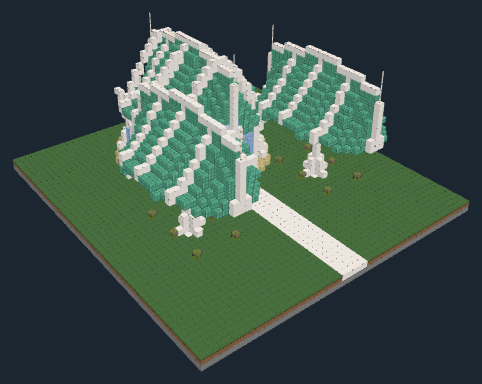
开瓣苗床与工具小亭
园艺养护 / 苗木培育
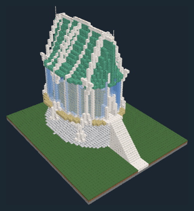
高枝寝亭与下层岗廊
驻守 / 居住
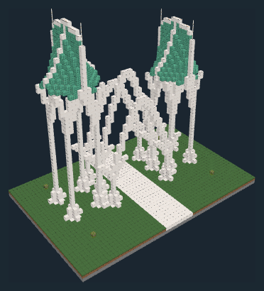
双白枝塔及三瓣门拱
出入通行
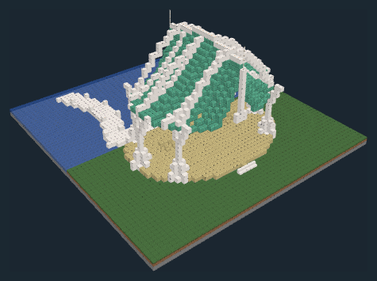
弧形栈道与叶顶候船亭
水运接驳 / 候船
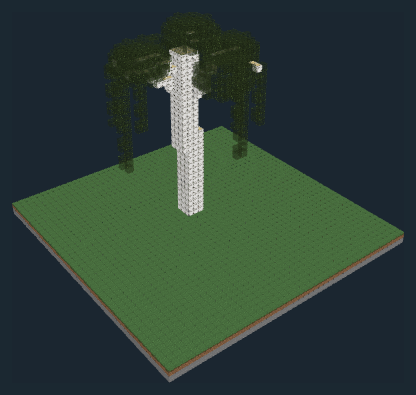
分簇树冠与帘状枝叶
树木观赏
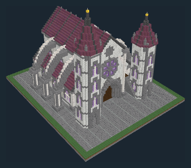
飞扶壁与肋拱中殿
教学 / 礼仪 / 集会
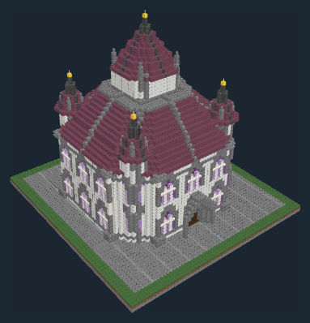
双层环廊与采光穹顶
书籍借阅 / 文献保管 / 阅读
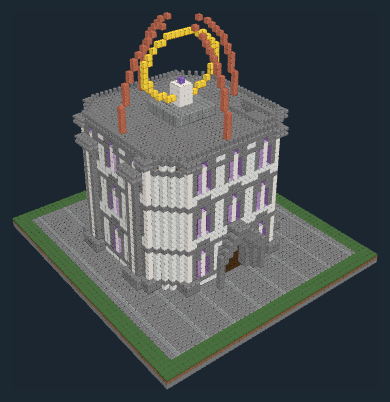
阶塔与开瓣星穹
天象观测 / 研究
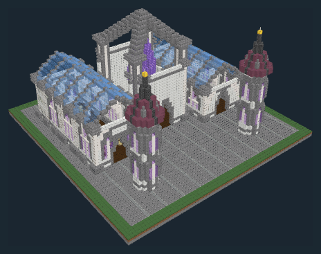
晶核中庭与玻璃长翼
实验研究 / 药剂制作
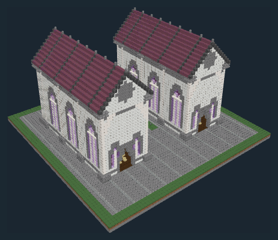
双翼三层寝室
学生住宿 / 自习
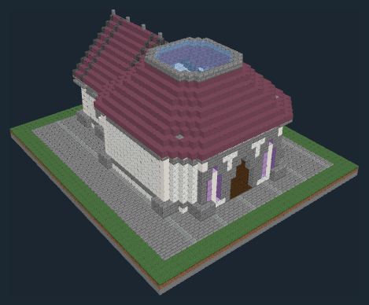
八角陈列窗与后部货间
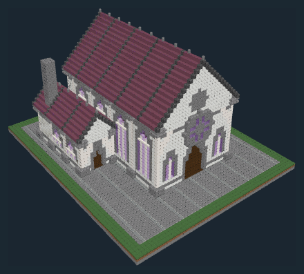
高窗长厅与备餐院
餐饮 / 集体用餐
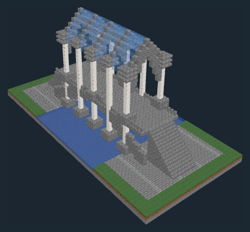
高券桥腹与玻璃廊顶
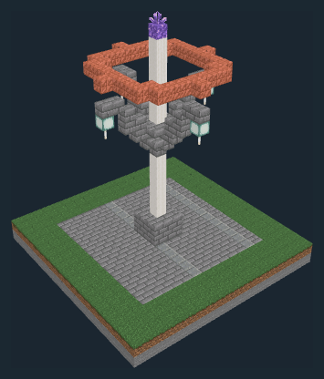
四瓣悬灯与仪环
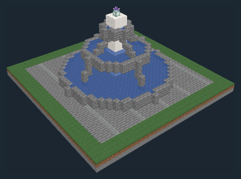
放射石肋与水盆
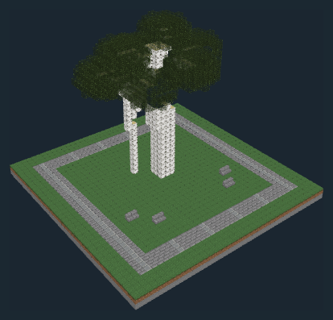
三干庭树与弧形读书席
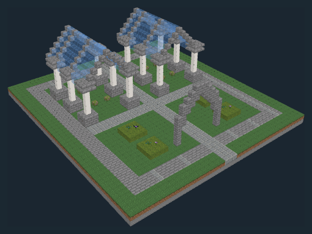
十字花径与双玻璃花房
花草观赏 / 园艺养护
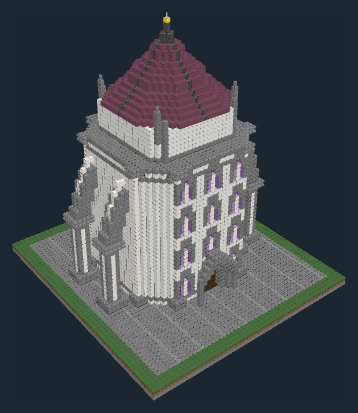
四层议事与学籍廊
公共办事 / 议事 / 文献保管
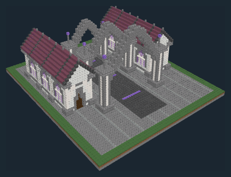
三进尖拱与校准侧廊
出行登记 / 传送设施维护
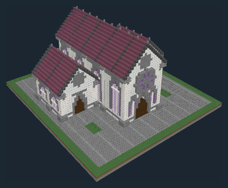
十字病房与日照庭
医疗 / 照料 / 休养
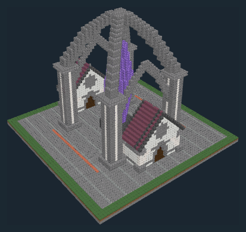
张拱主架与检修庭
魔法器材制作 / 能源设施维护
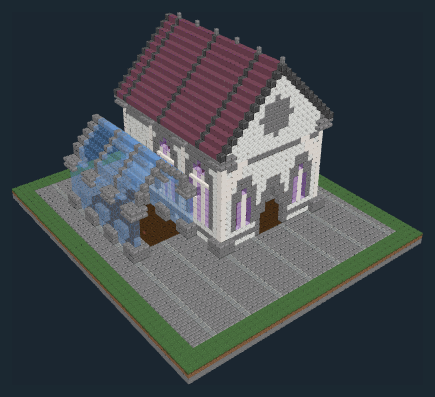
阶梯书斋与玻璃冬园
家庭居住 / 研究
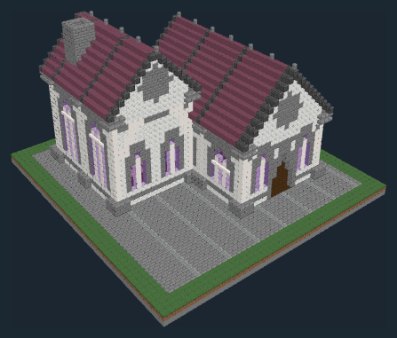
错顶工间与冷却烟塔
药剂制作 / 商品零售
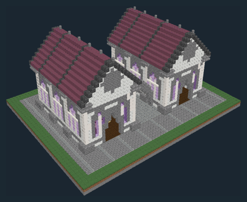
连拱采光书廊
文献抄写 / 书籍制作
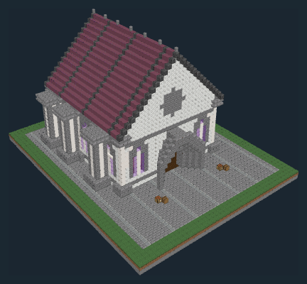
厚壁券室与卸货前庭
货物仓储 / 材料保管
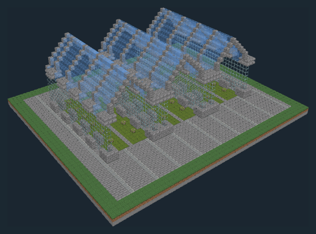
三跨肋架与试植床
植物教学 / 园艺养护
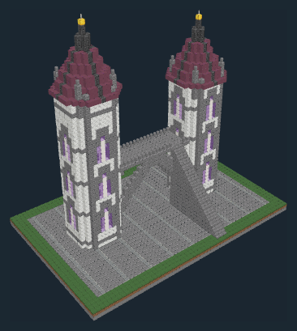
尖券通道与值守桥廊
出入通行 / 驻守
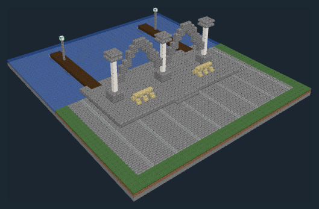
券廊候船与双臂栈桥
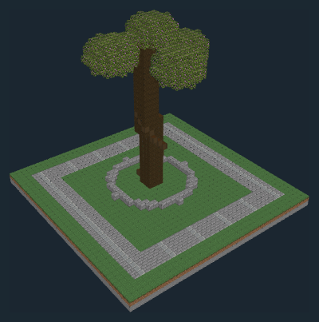
扭转枝冠与星石基座
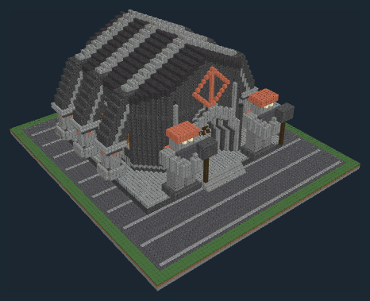
折角重拱与祖卫门庭
议事 / 正式接见 / 礼仪
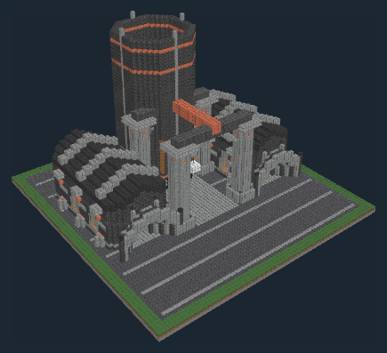
露架吊运与八角炉塔
金属冶炼 / 工具制造
围井调度与双层验矿廊
矿业管理 / 矿料检验
八角祖厅与环列石龛
祖先纪念 / 礼仪
下沉炉间与侧向寝室
八角火厅与桶窖侧室
餐饮 / 饮酒会聚
三门石跨与卸货台
货物仓储 / 装卸
三段折拱与桥头石卫
步行过桥 / 矿料运输
四爪铁篮与石墩
持斧全身像与阶台
纪念 / 休憩
倾干与三层横枝
断层石台与环游小径
景观观赏
三重阶台与双祖卫
礼仪 / 正式接见 / 防御
交叉压架与双券核验间
铸币 / 鉴定 / 交易管理
重墩井架与双层接驳
矿运提升 / 矿业管理
三券温池与排汽石塔
公共沐浴 / 休憩
斜采光顶与分列工台
宝石加工 / 商品零售
双锻台与后部试装廊
工具制造 / 武器制作
铜罐庭与石券粮房
双层壁龛寝居与公共炉厅
工人住宿 / 集体用餐
分级料斗与重架筛台
矿料检验 / 矿料分类
三进折角券与侧堡
出入通行 / 防御
重石岸台与吊臂塔
水运接驳 / 货物装卸
扭根与风削树冠
圆塔环墙与三层领主楼
防御 / 驻守 / 议事
圆券侧廊与后部半圆祭堂
礼仪 / 集会
石券底廊与三山墙挑楼
三跨锤梁与连续摊廊
集市交易 / 货物暂存
窄面三层与逐级出挑
居住 / 家庭生活
马车门洞与木廊客房
旅宿 / 餐饮
敞口锻棚与石砌双烟道
锻造 / 修理
厚墩圆拱与桥头避让台
步行通行
斜撑木柱与双悬灯笼
街道照明
公共取水池与狮口石柱
景观 / 公共取水
环树长椅与集会空地
景观 / 休憩
木篱门架与分格香草畦
景观 / 园艺养护
圆券四面回廊与独立小堂
礼仪 / 文献保管 / 集体居住
石厅木翼与坡顶门屋
居住 / 正式接见 / 庄园管理
阶梯山墙与双层秤量厅
商贸管理 / 集会 / 货物称量
石基木钟室与四面表盘
报时 / 公共瞭望
外露轮轴与挑楼磨粮间
粮食加工 / 货物暂存
前店木屋与后部圆窑
食品制作 / 零售
开窗织厅与露天染缸
石基高仓与山墙吊货架
石屋寝室与操练前院
驻守 / 集体居住 / 训练
圆塔箭窗与巡逻门楼
防御 / 步行通行
三角桁架与木桩栈桥
装卸 / 货物暂存
列植矮果树与藤架小径
景观 / 果树养护
图像来自当前 NBT 的 Studio 渲染，仅裁去视窗空白。设备与水体为静态表现；尚未做游戏内行为验证。尺寸为包含屋檐、台阶和场地的完整模型边界。